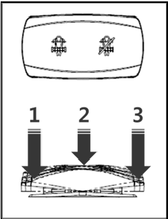

This switch initiates regular regeneration process of the
post-treatment device.
A pop-up on the SCR Display warns the operator to perform SCR Cleaning. (3 warnings:
at 10 hrs remaining, 5 hrs remaining, Immediate)
<Exemplary warning – 10 hrs remaining>

Press this switch and release it after 3 sec, SCR Cleaning will
be started and the engine speed will be increased. Screen pop-up
provides information on the warning up and cleaning process.
<Cleaning process>
<Completed>
The switch returns to the normal position of "2" after pressed
by the operator to position "1". However, it does not return when
pressed to position "3" and the operator shall return the switch
from position "3".
Setting this switch to position "3" prohibits automatic SCR
Cleaning in an environment subject to dust, explosion or regulated
noise level. Press position "3" for 3s, a pop-up appears as shown
below: